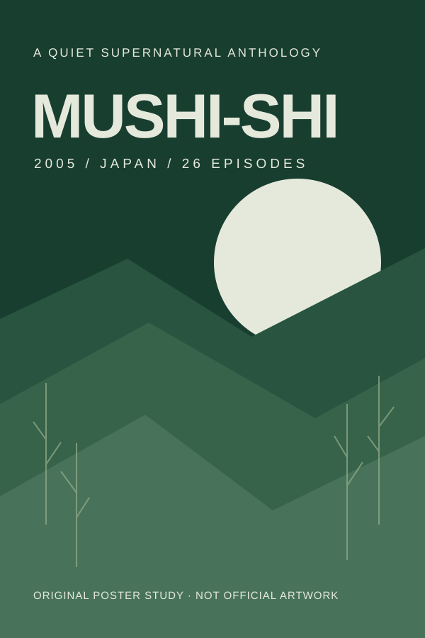

Supernatural Slice of life
Mushi-Shi
A wandering specialist explores the quiet, strange ways that people and the natural world intertwine.
Why this might be for you
Because you liked Natsume’s Book of Friends. Try another gentle supernatural anthology, with quieter, self-contained stories.
Sample preferences · Choices reset on reload
Try the feedback controls. What fits your taste?